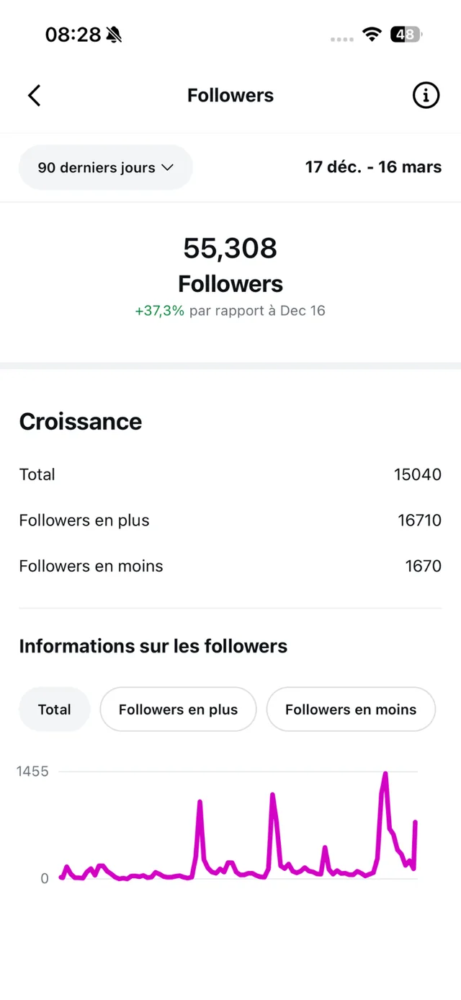
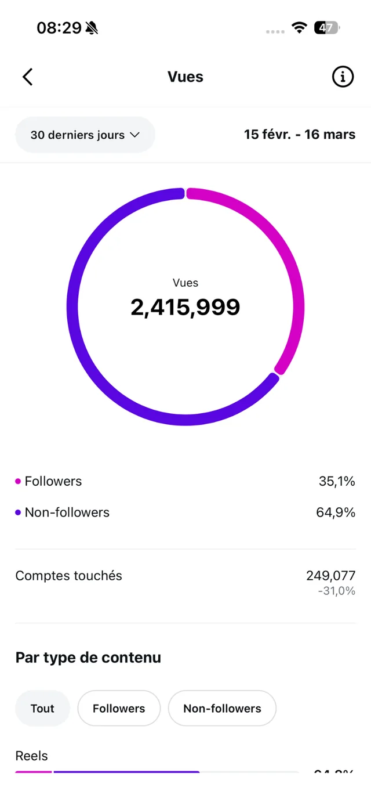
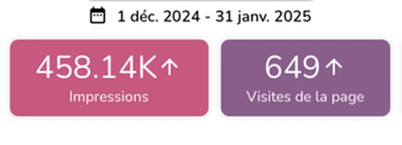

Réseaux sociaux
Stratégie, planning éditorial, création de contenus et animation quotidienne de votre communauté.
Voir des exemplesLe handball, c'est mon autre terrain de jeu. On y retrouve tout ce que j'aime dans mon métier, une stratégie claire, de l'énergie, des passes bien placées et l'envie de marquer ensemble.
Faites défiler, le match commence
Un projet, une idée, l'envie de faire bouger tes réseaux ?
Diplômée d'un Bachelor en communication digitale, j'accompagne les entreprises à développer leur communication.
Créative et dynamique, je vous accompagne dans la mise en place d'une stratégie de communication, la création de contenus, la gestion des réseaux sociaux, l'analyse des statistiques, les publicités ads et la rédaction web.
Je réalise moi-même mes photos et mes vidéos, avec mon Canon EOS R50, un stabilisateur DJI RS4 Mini et un micro DJI.
Des marques et des personnalités de tous horizons, de la santé animale à la décoration en passant par l'automobile.
14 marques et personnalités
De la stratégie à la création, j'accompagne les marques dans leur communication globale. Mon approche combine réflexion stratégique, créativité visuelle et expertise digitale pour donner vie à des projets qui résonnent avec vos audiences.
Stratégie, planning éditorial, création de contenus et animation quotidienne de votre communauté.
Voir des exemplesDes séquences pensées pour faire réagir votre communauté, entre sondages, conseils pratiques et coulisses.
Voir des exemplesCampagnes Meta complètes, des visuels au ciblage, avec un budget suivi de près.
Voir des exemplesAudit, objectifs, cibles et territoires de marque pour un plan d'action sur-mesure.
Voir des exemplesSuivi mensuel des performances et recommandations pour ajuster votre stratégie.
Voir des exemplesReportages en entreprise, produits et portraits pour nourrir vos contenus.
Voir des exemplesParce que la communication doit générer des résultats tangibles, je mesure l'impact de chaque action. Croissance de l'audience, engagement en hausse, visibilité amplifiée, découvrez comment mes stratégies se traduisent en performances réelles pour mes clients.
Des chiffres qui parlent, une approche qui fonctionne.



+37,3 % d'abonnés sur 90 jours
Survolez un reel pour le lancer, cliquez pour le regarder avec le sonTouchez un reel pour le regarder avec le son
Je crée vos reels de A à Z, de la conception créative au tournage, jusqu'au montage sur Premiere Pro et à l'habillage sur After Effects.
Des contenus vidéo professionnels et engageants qui donnent vie à votre stratégie de communication digitale.
Couverture de reelCréation d'une couverture de reel Instagram, au design harmonisé avec le feed pour garantir une cohérence visuelle et une identité de marque forte.
Du contenu vidéo à l'habillage graphique, une expertise 360° au service de votre image. Survolez un reel pour l'aperçu, cliquez pour le regarder avec le son.
Exemples de publications, de campagnes et de contenus vidéo réalisés pour mes clients
Un projet de contenu, de réseaux sociaux ou de stratégie ? Parlons-en.
+15 040 abonnés en 90 jours
Sur le compte Instagram @menopauseattitude, du 17 décembre 2025 au 16 mars 2026
Le nombre d'abonnés du 16 décembre est déduit du total et de la croissance affichés par Instagram.
| Étape | Abonnés |
|---|---|
| Le 16 décembre 2025 | 40 268 |
| Nouveaux abonnés | +16 710 |
| Désabonnements | −1 670 |
| Le 16 mars 2026 | 55 308 |
| Période | Vues | Part des non-abonnés | Part des abonnés |
|---|---|---|---|
| Janvier 2026 | 1 152 536 | 49,5 % | 50,5 % |
| Du 15 février au 16 mars 2026 | 2 415 999 | 64,9 % | 35,1 % |
menopauseattitudeOn a toutes ce sac qui pèse une tonne, alors moi aujourd'hui j'ai décidé de vider mon sac 😅
Entre le portefeuille léopard souvenir (merci Stéphanie 🥰), les chewing-gums aux plantes que je rachète en pagaille chez Carrefour et ma trousse de survie anti-âge, il y a de quoi faire un inventaire complet.
Un joyeux foutoir de ménopausée (très bien) organisée, quoi 😄
Et vous, si vous ne deviez garder que 3 produits de mon sac pour les mettre dans le vôtre, ce serait lesquels ? J'ai hâte de vous lire !! 😍
menopauseattitudeOn a tous vu cette plante dans le salon de quelqu'un !
L'aloe vera!!
On ne s'en occupe pas vraiment, elle demande rien, elle fait sa vie dans un coin. Et puis un jour, vous avez une irritation de peau, une brûlure, une démangeaison et vous vous souvenez : “Ah, j'ai une aloe vera quelque part !” Vous cassez une feuille, vous mettez le gel direct et le lendemain : c'est parti.
C'est là qu'on se demande “mais pourquoi je ne le fais pas plus souvent ?”
Parce qu'entre un truc acheté en pharmacie à 20€ et cette plante gratuite qui repousse toute seule, il n'y a pas photo.
Donc je vous montre ce que cette plante qui pousse chez vous peut vraiment faire😉
menopauseattitudeEt si on avait plusieurs cerveaux ??🧠
Celui qui panique au moindre imprévu (bonjour le cerveau reptilien, toujours en mode survie). Celui qui pleure devant des images touchantes (merci le limbique). Celui qui tourne en boucle à 2h du matin (le cortical qui n'arrive pas à lâcher prise). Et celui, souvent oublié, qui grogne dans notre ventre après un repas avalé en 5 minutes entre deux.
Le naturopathe Daniel Kieffer a théorisé cette idée dans son livre Les 10 cerveaux de la naturopathie
Et vous, dites-moi en commentaire, lequel de ces cerveaux avez-vous le plus tendance à négliger ? Et celui dont vous avez l’impression qu’il carbure à plein régime ?
menopauseattitudeVous connaissez cette racine ?
C'est le ginseng (Ren Shen). Elle pousse dans les montagnes du Nord-Est chinois et met des années à se former, parfois jusqu'à 50 ans !
Mais elle sert à quoi ? À soutenir le corps quand il est épuisé, fatigue, souffle court, appétit qui baisse, récupération difficile. En médecine chinoise, on dit qu'elle renforce l'énergie vitale sans exciter artificiellement le corps, contrairement au café.
Dans un monde qui va de plus en plus vite, le ginseng comme la nature en général nous montre que prendre son temps pour éclore vraiment peut aussi être une bonne chose ….
Vous en aviez déjà entendu parler, ou c'est une découverte totale ?
Et vous, c'est quoi votre réflexe qui marche bien quand vous vous sentez fatiguée?
menopauseattitudeLe jeûne intermittent, ce n'est pas juste une mode Instagram.
Ramadan, Carême, Yom Kippour... l'humanité pratique le jeûne depuis toujours, bien avant qu'on en fasse une “tendance bien-être”.
Pendant le jeûne, le corps active un processus fascinant appelé l'autophagie. En gros, vos cellules font le ménage, éliminent leurs déchets et se régénèrent. Une étude publiée dans Nature Reviews Molecular Cell Biology a même mis en lumière son rôle dans la protection contre le vieillissement cellulaire. Pas mal, non ?
Petit conseil s'il y en a parmi vous qui veulent se lancer : oubliez le 5:2 ou l'OMAD pour commencer, c'est trop restrictif et ça peut créer des carences. Le 16/8 reste largement suffisant et tellement plus simple à tenir dans la durée, si vous avez envie de mettre en place ce style de routine.
Et si même 16h ça vous parait long au début, commencez doucement avec un 12/12.
Personnellement, je reste persuadée, qu’avant de dire qu’il faut manger trois fois par jour, ou quatre fois par jour ou cinq fois par jour, il est surtout important d’écouter son corps.
Et pour ma part, j’ai toujours remarqué que j’avais plus d’énergie quand je ne mangeais que deux fois par jour.
Et vous, vous avez déjà testé le jeûne ? Si oui, sous quelle forme ? Combien de repas faites-vous par jour ? ( en incluant les collations, bien sûr. )
menopauseattitude6 mouvements de Qi Gong à faire au réveil !
Pas besoin de tapis, de tenue particulière, ni de 45 minutes devant vous. 5 minutes, dans votre lit ou à côté, suffisent pour dérouiller la nuque, les épaules, le dos et les mains.
Quelques minutes pour réveiller le corps en douceur, sans forcer.
Le Qi Gong est une pratique chinoise millénaire qui associe mouvements lents, respiration et concentration pour faire circuler l'énergie vitale, le fameux "Qi".
L'idée n'est pas de "faire du sport" mais de sortir le corps de son état de sommeil progressivement, un peu comme le fait un chat qui s'étire au réveil.
En médecine chinoise, chaque organe est associé à un moment de la journée ( laps de temps de 2h où l’organe exerce son activité la plus importante ) le matin correspond au réveil du Qi dans tout le corps, d'où l'intérêt de pratiquer à ce moment précis…
La respiration doit toujours accompagner le mouvement, on inspire à l'ouverture, on expire à la fermeture.
Enregistrez ce post pour le refaire demain matin et partagez-le à quelqu'un qui se réveille toujours raide le matin 😄 genre moi ?
Avez-vous déjà pratiqué le Qi Gong? Quel exercice vous semble le plus dur juste en le lisant ? 1, 2, 3, 4, 5 ou 6 ?
menopauseattitudeOn ne compte pas les calories, on lit l'assiette (et c'est bien plus intéressant)
Quand j'ai découvert la diététique chinoise, je m'attendais à une nouvelle liste d'aliments interdits façon régime. En fait pas du tout ! Ici on ne culpabilise pas devant un carré de chocolat, on regarde plutôt si votre corps a besoin de chaud ou de frais, de sec ou d'humide.
Chaque aliment a une nature (froide, fraîche, neutre, tiède, chaude) et une saveur, et on adapte tout ça à la saison et à votre profil énergétique perso. Le gingembre par exemple est considéré “chaud” même sorti du frigo, alors que le concombre reste "frais" même tiède. Un peu comme certaines personnes qui ont toujours la même énergie qu'il fasse 10 ou 30 degrés, sauf que là c'est l'aliment qui a un caractère.
La “Rate-Pancréas” dont je parle dans le carrousel ne désigne pas vraiment votre pancréas anatomique, mais une fonction énergétique liée à la digestion. En gros ce n'est pas un organe qu'on peut voir sur une échographie, c'est un concept.
Et le Jing, cette essence vitale dont on parle aussi, c'est un peu votre capital de départ à la naissance. On ne peut pas vraiment l'augmenter, seulement le préserver en évitant de trop le gaspiller (excès en tout genre, fatigue chronique, stress permanent).
Vous, plutôt manger selon les saisons ? Vous faites attention aux fruits et légumes de saison ou pas du tout et on vous retrouve avec des tomates en plein hiver ?🥶
Des questions, des chiffres et des sondages pour prolonger les publications
+620 abonnés en cinq semaines
Sur Instagram, du 20 juillet au 27 août 2026, en pleine période de vacances et sans budget publicitaire
Le multiplicateur traduit l'évolution indiquée dans le reporting.
| Indicateur | Sur la période | Évolution |
|---|---|---|
| Portée quotidienne sur Instagram | 472,49 personnes par jour | +2 128,71 % |
| Vues sur Facebook | 1 587 vues | +1 859 % |
| Vues sur Instagram | 73,26 K vues | +628,52 % |
| Format | Portée moyenne |
|---|---|
| Reel | 936,30 |
| Publication | 632,92 |
Les coulisses de l'agence
Le projet Saint-Cloud
+620 abonnés en cinq semaines, du 20 juillet au 27 août 2026
Un sondage, un signe à décoder et un relais vers le carrousel
Une portée multipliée par 3,4 avec un budget presque divisé par deux
Campagne Meta de juillet 2026, comparée au mois de juin
| Indicateur | Juillet 2026 | Évolution |
|---|---|---|
| Portée | 76,95 K personnes | +238,92 % |
| Impressions | 158,68 K | +84,62 % |
| Budget dépensé | 111,37 € | −47,23 % |
| CPM | 0,70 € | −71,42 % |
| Format | Portée moyenne |
|---|---|
| Reel | 157 |
| Publication | 43,83 |
Pick & Smile« J’y vais demain » La phrase qui prend un jour de plus chaque jour…
On connaît les petites habitudes des récupérateurs de colis… et on vous aime quand même 😏
Allez, on passe aux aveux : plutôt A, B ou C ? Si tu réponds D, on risque d’avoir quelques questions 😂
Pick & SmileTu venais chercher UN colis…
Et là, on t’annonce : « Vous en avez un deuxième. » 🎉
Ce petit bonheur inattendu qui donne l’impression d’avoir gagné au loto 😂
Avoue, toi aussi tu réagirais comme ça ?
Pick & SmileDans un point de retrait, chaque colis à remettre demande du temps, de la place et des déplacements. Et quand ils s’accumulent, nos équipes le ressentent vite…
C’est de ce quotidien qu’est né notre projet de robotisation, mené avec l’École d’Ingénieurs de Picardie Jules Verne et le laboratoire MIS.
L’idée est simple, confier à un robot le transport des bacs entre le stock et la réception. Moins d’allers-retours pour les équipes, un espace mieux utilisé et, à terme, moins d’attente pour les clients.
Pour l’instant, le robot fonctionne en simulation et les pièces ont été commandées. Il reste du travail avant de le voir circuler chez nous, mais le projet avance !
Nous voulons construire une solution utile sur le terrain, avec un coût adapté à une structure comme la nôtre.
Et vous, dans votre quotidien professionnel, quelle tâche répétitive aimeriez-vous pouvoir déléguer à un robot ?
Pick & SmileOù est Charlie ? ou plutôt où est le colis ?
On vous a caché un colis orange quelque part dans ce point de retrait… 👀
Vous l’avez trouvé ?
Dites-nous « TROUVÉ » en commentaire, mais 🤫 ne donnez pas sa position aux autres !
Pick & SmilePetit sondage très sérieux du jour. 👀
📦 Team petit colis : « J'ai commandé juste un petit truc… »
OU
📦📦📦 Team gros colis : « Normalement ça devrait rentrer dans la voiture. »
Alors… vous êtes dans quelle équipe ? 😂👇
Pick & SmileOn vous emmène dans les coulisses de septembre ! 📦
Deux carrousels Instagram
keimfranceLa rentrée des couleurs ! Et si septembre était le mois où l’on osait enfin la couleur ?
On a eu envie de vous montrer 4 teintes qui donnent tout de suite envie de repeindre un mur. Du vert kaki au bleu indigo en passant par les bruns glacés et l'abricot, chacune raconte une ambiance différente selon la pièce et la lumière qui l'accompagne.
Et vous, laquelle vous fait craquer pour cette rentrée ?
KEIM FranceAujourd’hui, le mur passe son casting couleur 🎨
Candidat n°1002 : chaleureux, lumineux et pas du genre à en faire des tonnes.
Alors, le RAL 1002 passe-t-il à l’étape suivante ?
keimfranceDans quelques semaines le thermomètre va commencer à faire ce qu'aucune peinture de façade classique ne supporte vraiment bien.
Un bardage bois, un mur en béton brut, un enduit à la chaux traditionnel ou une façade colorée n'ont pas les mêmes besoins face à l'hiver et KEIM a une peinture minérale pensée pour chacun d'eux.
>Lignosil Color laisse le bois respirer dans des tons bleu-gris ardoisés
>Concretal-W protège le béton sans le dénaturer dans des gris pierre naturels,
>Granital perpétue depuis 1878 la peinture silicate historique dans des blancs chauds
> Soldalit tient sa teinte vingt ans face aux UV même dans un vert profond, tout en laissant le mur respirer.
Commentez MATIÈRE pour recevoir en message privé le lien vers nos brochures façades, avec le produit adapté à chaque support.
KEIM FranceFormation pour les professionnels du bâtiment, le 29 septembre à Lyon.
KEIM organise une journée entière sur les systèmes minéraux pour façade.
Pensée pour les entreprises de façade, les artisans peintres et les maître d’œuvre qui veulent maîtriser ce savoir-faire de bout en bout.
Au programme 7 heures pour comprendre le fonctionnement de ces systèmes de peinture ainsi que les bonnes pratiques de mise en œuvre sur le terrain.
📅 29 septembre 2026
📍 Lyon
⏱️ 7 heures de formation
Il reste encore quelques places, inscrivez-vous dès maintenant!
KEIM FranceLa peinture ne sert pas qu'à habiller un mur, elle peut aussi redessiner complètement une pièce quand on ose sortir du monochrome classique. Ce sont autant de façons de créer du volume et du caractère avec juste un pot de peinture et un peu d'audace.
Ce qu'on aime particulièrement avec ces effets c'est qu'ils permettent de jouer avec l'architecture existante plutôt que de la subir, une astuce redoutable dans les intérieurs anciens où les volumes ne sont pas toujours simples à mettre en valeur.
Et vous, lequel de ces trois effets vous tente le plus ?
💙 L'arche
🧡 Les rayures
Le soubassement
KEIM FrancePour la journée du patrimoine nous avons voulu mettre en lumière ce travail réalisé dans une église où chaque voûte a retrouvé son éclat grâce à la peinture minérale.
Préserver le patrimoine, c'est ce qui nous anime depuis toujours chez KEIM. Ici, la mise en avant des arcs est réalisée avec la peinture intérieure KEIM Optil et deux teintes : le 0-9011 pour l'orange et le 0-9019 pour le bleu. Ces choix permettent de souligner chaque voûte et de redonner tout son rythme à l'ensemble.
Trois nuances de bleu se répondent du soubassement jusqu'à la niche la plus foncée, sans jamais rompre l'harmonie. Un dégradé qui structure la pièce et apporte cette profondeur presque veloutée aux murs.
KEIM FranceCes rayures verticales vert sauge et blanc cassé rythment le mur et étirent la pièce vers le haut. Un tracé net qui demande une peinture qui ne bave pas et qui tient sa ligne dans le temps.
KEIM FranceLes comptes de la Dr Wahiba Nefti Benfreha
Les chiffres relevés sur ses tableaux de bord, de décembre 2024 à octobre 2025
sanitavia“J’ai des points blancs sur mes ongles… est-ce une carence ?”💅
La science montre que la cause la plus fréquente, c’est tout simplement… un petit choc ou frottement oublié sur l’ongle.
❌ Non, ce n’est pas toujours une carence en calcium ou en zinc.
✅ Les vraies carences (zinc, protéines, calcium) provoquent plutôt des ongles fragiles, striés ou cassants, pas juste de petits points isolés.
Pas d’inquiétude pour quelques taches blanches → pensez surtout à varier vos apports !
Et vous, aviez-vous aussi entendu dire que ces points étaient forcément dus à une carence ?
sanitaviaEn supermarché, entre nectar, jus à base de concentré et 100 % pur jus, il est facile de se laisser tromper par les étiquettes. 🥤
Mes recommandations ?
→ Privilégiez toujours le "100% pur jus"
→ Vérifiez la liste d'ingrédients (plus elle est courte, mieux c'est !)
→ Limitez les quantités, un petit verre suffit
→ Si possible, optez pour les versions "pressé à froid"
Dites-moi : plutôt team jus du commerce ou team fruits frais pressés maison ? Qu'est-ce qui guide votre choix ?
sanitaviaEst-ce que l’huile d’olive, c’est bon pour la santé ? 🥄
Absolument ! Je l'encourage vivement dans le cadre d'une alimentation saine et variée. Elle regorge de bonnes graisses, d'antioxydants et d'éléments bénéfiques qui contribuent à :
✅ Protéger votre cœur
✅ Abaisser la tension artérielle
✅ Améliorer le taux de cholestérol
✅ Réduire l'inflammation et améliorer la sensibilité à l'insuline
Mes astuces pour en tirer le meilleur :
🥗 Privilégiez-la crue, en vinaigrette ou dans vos plats froids.
🍳Vous pouvez aussi l'utiliser pour une cuisson légère (pas trop forte, autour de 160–180°C).
⚠️Attention : même si c'est une bonne matière grasse, elle reste riche en calories. Modérez donc votre consommation pour éviter de prendre du poids.
L'huile d'olive est un véritable coup de pouce pour votre santé, à condition de l'utiliser intelligemment et avec modération !
Le Printemps des ArènesSoyez prêts !
3 000 places par événement, ça part vite ! ⏰
Au programme :
• Ibrahim Maalouf
• Jamel Comedy Club
• Niska
• Orchestre Colonne
• World Chase Tag
➡️Rendez-vous sur leprintempsdesarenes.fr dès demain 11h pour réserver vos places !
Dites-nous en commentaires à quel(s) événement(s) vous souhaitez participer ?
Le Printemps des ArènesPréparez votre arrivée au festival Le Printemps des Arènes en toute sécurité !
Si vous avez des questions, contactez-nous par mail : contact@leprintempsdesarenes.fr
Le Printemps des ArènesVous ne savez pas quoi faire dimanche ?
Rendez-vous aux Arènes d'Évry-Courcouronnes à 16h pour un concert exceptionnel de l'Orchestre Colonne ! 🎶
Des musiques culte de Star Wars, Harry Potter et Pirates des Caraïbes vous attendent, ainsi qu'un voyage envoûtant dans l'univers de la musique classique avec des chefs-d'œuvre de Grieg, Dukas et Stravinsky. Un événement exceptionnel pour toute la famille ! 🎻
Acheter les dernières places disponibles ici : ticketmaster.fr
chasseursdautosLes 3 erreurs à éviter quand on achète une voiture d'occasion !
Vous voulez être sûr de trouver la bonne voiture, au bon prix et sans stress ? Chez Chasseurs d'Autos, on fait tout le boulot pour vous ! 😉
Chasseurs d'AutosVous souhaitez rouler plus propre sans exploser votre budget ? L’achat d’une hybride d’occasion peut être une excellente option… à condition d’éviter certains pièges !
Vous avez déjà envisagé d’acheter une hybride d’occasion ? Partagez votre avis en commentaire !🚗
Vous souhaitez être accompagné(e) dans votre recherche ? Faites confiance à Chasseurs d’Autos pour trouver la voiture idéale !
chasseursdautosVous voulez une voiture d’occasion récente sans achat immédiat ?
Avec la LOA chez Chasseurs d’Autos, profitez de mensualités adaptées, aucun souci de revente et la liberté de choisir en fin de contrat !
✅ Achetez ou changez de modèle quand vous voulez
✅ Sécurité et sérénité garanties
✅ Une voiture sans prise de tête, comme notre viking au volant ! 😆
Nos offres LOA vous attendent en bio !
Vous êtes plutôt LOA ou achat direct ? Dites-nous en commentaire ! 👇
Chasseurs d'AutosIcône absolue de l'automobile, la Ferrari F40 allie puissance, design brut et expérience de conduite radicale.
Avec 1 315 exemplaires produits, elle est devenue une pièce rare dont la valeur dépasse aujourd'hui les 2 millions d'euros. Plus de 35 ans après, elle reste une référence incontournable dans l'univers des supercars.
Si vous pouviez l'essayer sur un circuit, lequel choisiriez-vous ? 🏁
Chasseurs d'Autos🚗 Une nouvelle voiture… et un grand sourire à la clé !
Félicitations à notre cliente pour cette belle acquisition.
Livraison effectuée avec soin par notre équipe, toujours au rendez-vous pour vous accompagner jusqu'au bout de votre projet auto.
Merci pour votre confiance 🙌
➡️ Et vous, prêt(e) à vivre la vôtre ? Découvrez nos véhicules sur chasseursdautos.com
Chasseurs d'AutosChasseurs d'Autos entre en piste ! 🏁
Nous sommes fiers de sponsoriser le pilote Vice-Champion d’Europe, Antoine Lepesqueux, pour sa saison 2025 en Ligier European Series.
Première course : Barcelone, les 4 et 5 avril .
Une belle aventure sportive aux côtés de l'équipe Les 2 Arbres, que nous aurons plaisir à suivre tout au long de l'année !
👉 Rendez-vous sur la ligne de départ pour soutenir Antoine dans cette nouvelle étape de son parcours !
Les tirages se déplacent à la souris, comme sur une table de travail.
Je réalise moi-même mes photos et mes vidéos, avec mon Canon EOS R50, un stabilisateur DJI RS4 Mini et un micro DJI.
Social ads
Meta • Campagnes • A/B testing
Du brief à la conversion, j'élabore des stratégies publicitaires qui performent.
Création de campagnes complètes (visuels, légendes, ciblages), gestion budgétaire optimisée, A/B testing systématique et analyse des données pour améliorer continuellement vos résultats.
Pick & Smile, juillet 2026
Une portée multipliée par 3,4 avec un budget presque divisé par deux
Campagne Meta de juillet 2026, comparée au mois de juin
Voir les données
Publicités